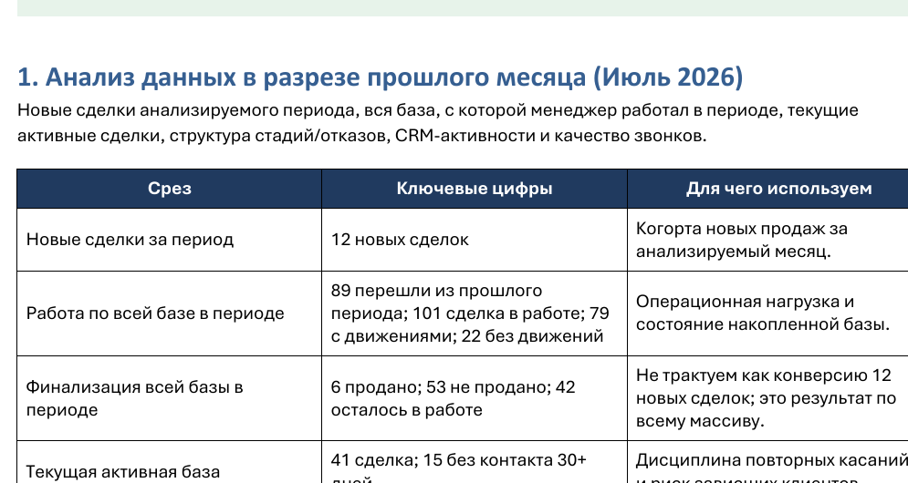
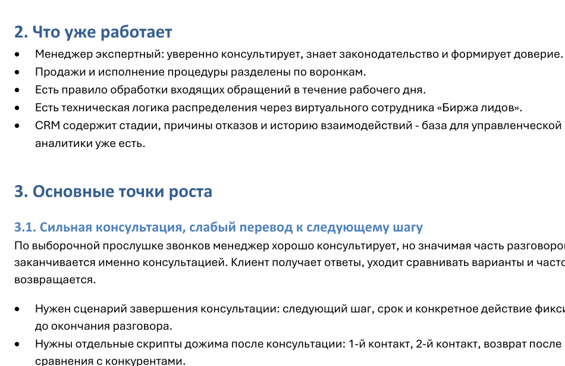
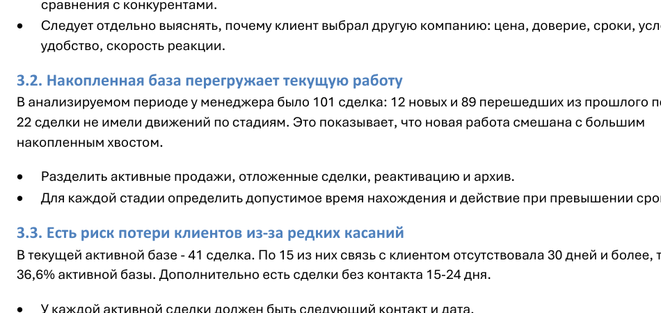
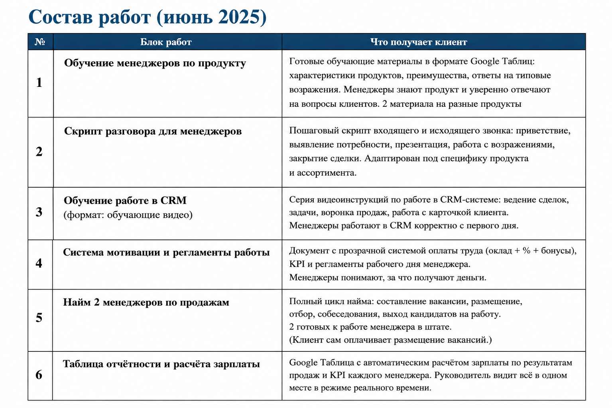
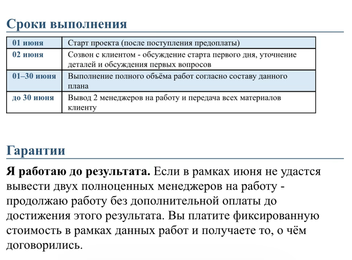

Разобраться, что происходит с продажами, прежде чем что-то перестраивать
Аудит - это базовая диагностика системы продаж. Смотрю, что уже работает, где основные провалы и чего не хватает. После этого понятно, на чём имеет смысл сосредоточиться в первую очередь.
На выходе - диагностика системы продаж по ключевым блокам и 3-5 приоритетов, которые требуют внимания в первую очередь.
Диагностика системы, а не разработка новой системы продаж
В рамках аудита я не переписываю скрипты, не строю новую CRM, не разрабатываю мотивацию и не разбираю подробно каждого сотрудника. Задача другая: увидеть текущее состояние продаж и определить основные точки, которые требуют внимания.
Если в отделе 2 менеджера, смотрю необходимую выборку их работы. Если 50, аудит не превращается в индивидуальный разбор всех 50 человек.
Размер отдела сам по себе цену не меняет.
12 элементов системы продаж
Не все из них обязательно будут одинаково важны в конкретном бизнесе. Цель - увидеть общую систему и найти узкие места.
Лидогенерация
Откуда приходят лиды, насколько поток стабилен и соответствует ли его объём существующей команде.
Обработка лидов
Как быстро обрабатываются обращения, есть ли повторные касания и где теряются клиенты.
Воронка продаж
Этапы, логика движения клиента, основные провалы и узкие места.
CRM
Сделки, задачи, обязательные данные, автоматизация и соответствие CRM реальному процессу продаж.
Работа менеджеров
Общий уровень работы, соблюдение процессов и качество коммуникации по необходимой выборке звонков, переписок и сделок.
Скрипты и алгоритмы
Есть ли они, используются ли и соответствуют ли реальной продаже.
Обучение
Есть ли система ввода нового менеджера и может ли сотрудник получить нужные знания без постоянного обучения собственником.
Мотивация
Понятна ли сотрудникам, связана ли с результатом и можно ли её нормально считать.
Отчётность и аналитика
Какие показатели видит собственник, считается ли конверсия и можно ли объективно оценить работу отдела.
Управление
Планёрки, контроль, постановка задач, ответственность и взаимодействие сотрудников с руководителем.
Документооборот
КП, договоры, счета, оплаты и то, насколько рутинные действия автоматизированы.
Готовность к росту
Можно ли масштабировать текущую модель или сначала нужно устранить базовые проблемы.
Собственнику должно быть понятно, где всё в порядке, а где уже горит
По основным элементам системы фиксирую состояние в понятной логике: работает, требует внимания, критичная зона.
🟢 Работает
То, что уже нормально выполняет свою функцию и не требует срочного вмешательства.
🟡 Требует внимания
Есть проблема или недостающий элемент, который стоит доработать.
🔴 Критичная зона
Участок, который заметно мешает работе системы и требует приоритетного решения.
Как выглядит результат аудита
Это не список общих советов. В аудите я разбираю реальные данные отдела: сделки, движение по воронке, работу с клиентами, CRM, звонки и переписки - в объёме, необходимом для диагностики.
Показываю, что уже работает и где находятся проблемы.



На выходе - приоритеты, с которых имеет смысл начинать
После аудита у вас остаётся диагностика основных элементов системы продаж: что уже работает, что требует доработки, где находятся критичные зоны и какие 3-5 направлений нужно взять в работу в первую очередь.
Также вы получаете выводы и рекомендации по дальнейшему направлению работы. После этого мы разбираем результаты вместе. Аудит показывает, что происходит и где проблема. Подробная разработка конкретных решений и внедрение - уже следующий этап, если он вообще нужен.
Возможный маршрут
Доработать существующий отдел продаж, самостоятельно устранить выявленные проблемы или после необходимых доработок передать отдел на сопровождение внешнему РОПу.
Иногда вывод другой
Может оказаться, что серьёзная перестройка отделу вообще не нужна. Достаточно нескольких точечных изменений - или собственник сможет устранить выявленные проблемы самостоятельно.
Бесплатный созвон - знакомство. Анализ начинается после оплаты аудита.
Коротко знакомимся
На первичном созвоне обсуждаем ситуацию и понимаем, есть ли вообще смысл в аудите.
Получаю материалы
CRM, доступную аналитику, сделки, звонки, переписки и другие материалы, которые нужны для диагностики.
Провожу аудит
Смотрю систему целиком и достаточную выборку сделок, звонков и переписок, а не пытаюсь разобрать каждого сотрудника поштучно.
Разбираем выводы
Показываю, что работает, где проблемы и какие 3-5 направлений стоит взять в работу в первую очередь.
Любая работа с отделом продаж начинается с аудита
Я не называю стоимость построения или серьёзной доработки отдела после одного ознакомительного созвона. Сначала нужно увидеть реальную систему, данные и процессы.
При этом аудит остаётся самостоятельным продуктом. После него можно ничего больше у ALSTER не покупать и заниматься изменениями самостоятельно.
Оплаченная стоимость аудита идёт в стоимость дальнейшего проекта ALSTER и не становится дополнительным платежом сверху.
Диагностика сама по себе продажи не меняет
Я покажу, где система теряет результат и на чём имеет смысл сосредоточиться. Дальше изменения нужно внедрять - самостоятельно, своей командой, с другим подрядчиком или вместе с ALSTER.
Что важно понимать до заказа аудита
Что мне даст аудит, если вы ничего не будете перестраивать?
Аудит - это диагностика, а не ремонт.
Когда ломается холодильник, мастер сначала определяет причину: например, нужно заправить фреон. После диагностики вы знаете, что именно сломано, что нужно сделать и сколько будет стоить ремонт. С отделом продаж тот же принцип.
После аудита вы понимаете:
- что уже работает и не требует изменений;
- где находятся основные проблемы;
- что сейчас сильнее всего влияет на продажи;
- что нужно исправлять в первую очередь.
Дальше решение за вами: исправлять самостоятельно, привлечь другого специалиста или продолжить работу со мной. Сам аудит ничего не «чинит». Он показывает, что именно нужно чинить и куда двигаться дальше.
Почему аудит платный?
Потому что это не ознакомительный созвон и не способ продать вам следующую услугу.
В рамках аудита я работаю с реальными данными вашего отдела: CRM, сделками, показателями, звонками и переписками - в объёме, необходимом для диагностики.
По итогам вы получаете результат независимо от того, будете ли дальше работать со мной.
А если после аудита я решу всё исправлять самостоятельно?
Пожалуйста.
Аудит не обязывает заказывать дальнейшие услуги. Результаты остаются у вас, и вы можете использовать их как ориентир для самостоятельной работы или передать своему сотруднику / другому подрядчику.
Если решите продолжить работу со мной, 10 000 ₽ за аудит засчитываются в стоимость дальнейшего проекта.
После аудита я пойму, что именно вы будете делать и сколько это будет стоить?
Да.
Если по результатам аудита вы решаете продолжить работу со мной, я составляю конкретный план дальнейших работ.
В нём фиксируется:
- что именно необходимо доработать;
- какие работы беру на себя я;
- в какой последовательности они выполняются;
- что получает клиент на каждом этапе;
- разбивка работ по этапам / неделям;
- общий срок проекта;
- стоимость.
То есть после диагностики появляется конкретный маршрут дальнейшей работы, а не абстрактное «нужно улучшить CRM и работу менеджеров».
А если идём дальше - вот так выглядит план работ
После аудита дальнейшая работа раскладывается по конкретным блокам, срокам и результатам. Вы заранее понимаете, что именно будет сделано и что получите на каждом этапе.


Фрагмент реального плана одного из проектов. Состав работ, сроки и условия для каждого бизнеса формируются индивидуально.
Заказать аудит - 10 000 ₽
Если продолжаем работу вместе, 10 000 ₽ засчитываются в стоимость проекта.
Откроется диалог с Ольгой в Telegram.